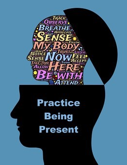
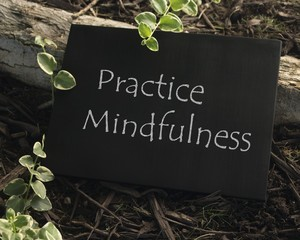

Module 3: Understanding the Learning Process and Responding to Assessment
3.1 Readiness for Learning
In this section you are going to explore...
- Applying Past Knowledge
- Mindfulness
- Intrapersonal Skills
Applying Past Knowledge to New Situations
Intelligent humans learn from experience. When confronted with a new and perplexing problem, they will draw forth experiences from their past. They often can be heard to say, "This reminds me of …" or "This is just like the time when I …" They explain what they are doing now with analogies about or references to their experiences. They call upon their store of knowledge and experience as sources of data to support, theories to explain, or processes to solve each new challenge. They are able to abstract meaning from one experience, carry it forth, and apply it in a novel situation.
Too often, students begin each new task as if it were being approached for the first time. Teachers are dismayed when they invite students to recall how they solved a similar problem previously—and students don't remember. It's as if they had never heard of it before, even though they recently worked with the same type of problem! It seems each experience is encapsulated and has no relationship to what has come before or what comes after. So make sure you are deliberately applying past knowledge to new situations and build on the experiences you have already had.

Mindfulness
People often look back at their time school days as the best years of their life. They often forget that being a student can be tough and that today students are under more pressure than ever before.
No matter what you’re studying, it’s guaranteed that at some points during your course, like when writing papers, performing on stage or preparing for exams, you will need high levels of cognitive control, emotional regulation and self-awareness. And ironically it’s often striving so hard for those things that make them harder to attain.
Simple Tools that are Proven to Work
Mindfulness training for students gives you tools to help you remain calm, sustain your attention, and be able to focus.
It does this by helping you to pay attention to the present moment through simple breathing and meditation practices that increase awareness of thoughts and feelings so as to reduce stress and anxiety and boost levels of attention and concentration.
Does this sound like New Age mumbo-jumbo? It isn’t. There is a growing body of empirical evidence showing that it is measurably effective. More and more universities are offering mindfulness training to their students as part of their well-being or counselling services.
This video explains what approaches can help.
Mindfulness Animated in 3 Minutes (3:23)
The Basics of Mindfulness Practice
Mindfulness helps us put some space between ourselves and our reactions, breaking down our conditioned responses. Here’s how to tune into mindfulness throughout the day:

- Set Aside Some Time - You don’t need a meditation cushion or bench, or any sort of special equipment to access your mindfulness skills—but you do need to set aside some time and space.
- Observe the Present Moment as It Is - The aim of mindfulness is not quieting the mind or attempting to achieve a state of eternal calm. The goal is simple: we’re aiming to pay attention to the present moment, without judgment. Easier said than done, we know.
- Let Your Judgments Toll By - When we notice judgments arise during our practice, we can make a mental note of them, and let them pass.
- Return to Observing the Present Moment as It Is - Our minds often get carried away in thought. That’s why mindfulness is the practice of returning, again and again, to the present moment.
- Be Kind to Your Wandering Mind - Don’t judge yourself for whatever thoughts crop up, just practice recognizing when your mind has wandered off, and gently bring it back.
How to Meditate
This meditation focuses on the breath, not because there is anything special about it, but because the physical sensation of breathing is always there and you can use it as an anchor to the present moment. Throughout the practice you may find yourself caught up in thoughts, emotions, sounds—wherever your mind goes, simply come back again to the next breath. Even if you only come back once, that’s okay.
A Simple Meditation Practice
- Sit comfortably. Find a spot that gives you a stable, solid, comfortable seat. Notice what your legs are doing. If on a cushion, cross your legs comfortably in front of you. If on a chair, rest the bottoms of your feet on the floor.
- Straighten your upper body—but don’t stiffen. Your spine has natural curvature. Let it be there.
- Notice what your arms are doing. Situate your upper arms parallel to your upper body. Rest the palms of your hands on your legs wherever it feels most natural.
- Soften your gaze. Drop your chin a little and let your gaze fall gently downward. It’s not necessary to close your eyes. You can simply let what appears before your eyes be there without focusing on it.
- Feel your breath. Bring your attention to the physical sensation of breathing: the air moving through your nose or mouth, the rising and falling of your belly, or your chest.
- Notice when your mind wanders from your breath. Inevitably, your attention will leave the breath and wander to other places. Don’t worry. There’s no need to block or eliminate thinking. When you notice your mind wandering gently return your attention to the breath.
- Be kind about your wandering mind. You may find your mind wandering constantly—that’s normal, too. Instead of wrestling with your thoughts, practice observing them without reacting. Just sit and pay attention. As hard as it is to maintain, that’s all there is. Come back to your breath over and over again, without judgment or expectation.
- When you’re ready, gently lift your gaze (if your eyes are closed, open them). Take a moment and notice any sounds in the environment. Notice how your body feels right now. Notice your thoughts and emotions.
Benefits of Mindfulness

Solid scientific evidence suggests that mindfulness interventions improve attention, self-control, emotional resilience, recovery from addiction, memory and immune response. Here’s a summary of benefits particularly relevant to students:
- Attention - Strengthens our "mental muscle" for bringing a focus back where we want it when we want it.
- Compassion - Awareness of our own thoughts, emotions, and senses grows our understanding of what other people are experiencing.
- Emotional Regulation - Observing our emotions helps us recognize when they occur, to see their transient nature, and to change how we respond to them.
- Calming - Breathing and other mindfulness practices relax the body and mind, giving access to peace independent of external circumstances.
- Adaptability - Becoming aware of our patterns enables us to gradually change habitual behaviors wisely.
- Resilience - Seeing things objectively reduces the amount of narrative we add to the world's natural ups and downs, giving us greater balance.
Whatever you are, be a good one. Abraham Lincoln
Intrapersonal Skills
The term intrapersonal (‘intra’ meaning inside) has been taken into use by Dr. Helena Lass to separate our inner functions and processes from the physiological functions of the body. Intrapersonal skills are the foundation of any successful career. Intrapersonal skills also formulate the solid foundation of mental wellness. Intrapersonal skills can be seen as basic skills that open up other skills. Much like learning to read: when one learns to read, many other skills and competencies can be developed as a result.
Intrapersonal Intelligence
Very few of us will have been taught the importance of developing Intrapersonal skills for the ability to reflect and monitor our own progress, thoughts and feelings, strengths and weaknesses. It is not a focus in education. Indeed, education has its own formal tests that we must attend to. Those few who do possess Intrapersonal Intelligence have often acquired it for themselves by taking an active interest in their ability to control their own destiny.
Howard Gardner, in his book ‘Frames of Mind’ defines Intrapersonal Intelligence as sensitivity to our own feelings, our own wants and fears, our own personal histories, awareness of our own strengths and weaknesses, plans and goals.
The following skills are those typically characteristic of individuals with Intrapersonal Intelligence. Such individuals are likely to be skilled at one or more of the following:
- Personal Efficacy - A strong awareness of one's own strengths, weaknesses and needs in order to plan effectively to achieve personal goals.
- Interpersonal Skills - The ability to get on well with other people as well as enjoying one's own company.
If you have the ability to self reflect, you are able to recognize and change your own behaviours, build upon your strengths and improve upon your weaknesses, resulting in very rapid development and goal orientated achievements.
Develop Your Intrapersonal Intelligence
Intrapersonal intelligence is the ability to be reflective and access one’s inner feelings. There is a strong ability to learn from past events because people exhibiting these strengths analyze and interpret events that have affected them well.
Ways in which individuals can improve or develop Intrapersonal intelligence include the following:
- Learn to meditate – or just set aside quiet time alone to think.
- Study philosophy – especially the different schools of thought from different cultures.
- Find a counsellor or therapist and explore yourself.
- Create your own personal ritual that makes you feel good as often as you choose to.
- Record and analyze your dreams.
- Read self-help books and listen to tapes.
- Establish a quiet place in your home for introspection.
- Develop an interest or hobby that sets you apart from the crowd.
- Make a personal development plan.
- Set short and long-term goals for yourself and then follow through on them.
- Attend a course designed to help you explore yourself and your potential (e.g. Neuro-Linguistic Programming, Psychosynthesis, Transactional Analysis, Psychodrama or Gestalt).
- Keep a daily journal for recording your thoughts, dreams, goals, feelings and memories.
- Study the biographies of great individuals with powerful personalities who made a real impact on the world.
- Do something to spoil yourself at least once a day.
- Keep a mirror handy and notice how your face changes depending on what kind of mood you’re in.
- Spend time with people who have a strong and healthy sense of self.
- Engage in daily self-esteem enhancing behaviours – such as listing your successes, positive self-talk and so on.
- Write your own autobiography.